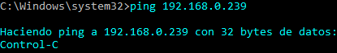
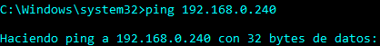

Google Drive
Google DriveSobre el Protocol...
1. Ping's a les IP's principals del centre
Obviament per realitzar els pings ho farem vía terminal, no obstant haurem de comprovar la .239 vía Web també.
Aquestes són les IP's on s'ha de fer ping: ( Poden ampliar-se en el futur )
2. La Sala de Professors
Normalment una vegada haguem signat i agafat les claus, podem dirigir-nos a la Sala de Professors on revisarem els següents equips:
1. Els ordinadors de repositori estaran operatius.
2. Els portàtils estaran tots al Rack.
3. Les impresores i la Konika estaran funcionant correctament.
4. Els equips dels professors estaran operatius i llestos per al seu funcionament.
3. Firmes dels Professors
Per portar un control sobre els ordinadors i els seus usos, els professors destinats a l'aula de Tecnologia i Informàtica, hauran de signar a un document la seva estància a l'aula, conforme els han fet servir ell i els seus alumnes. Nosaltres ens encarregarem de matí, de revisar les signes i al final del dia també.
Si es dona el cas que un professor no ha signat, s'ha de comunicar al Cap de Departament, Andreu Bonet, la incidència. Qui personalment s'encarregarà de pendre les mesures adients.
4. Test de Velocitat
El Test de Velocitat l'utilitzarem per medir i anotar al protocol la velocitat de muntada i baixada a la que el nostre centre treballa durant el matí. Podem trobar un link directe al menú de la pàgina web on ens dirigirà al que fem servir nosaltres, ja que es molt fiable. Li farem una captura de pantalla amb el "shutter" o una altra eina de captura de pantalla i ho muntarem a la carpeta corresponent del Drive.
( Tenim pendent incloure una muntada directa de la imatge a la pàgina i que la coloqui a la carpeta del drive directament. )
5. Còpies de Seguretat
Normalment una vegada al mes haurem de fer còpies de seguretat del servidor, no obstant d'això se n'encarrega el tècnic Kike. La nostra labor en aquest cas, serà realitzar copies de seguretat de les clonacions del nostre disc dur de ISOS o del propi sistema. Tanmateix també serà interessant portar un seguiment i anotar la data de revisió al full de protocol.
6. Revisió dels Racks
Dos dies a la setmana, normalment dilluns i divendres, haurem de passar per les aules on vam implementar racks amb ordinadors portàtils, a fi d'assegurar-nos que no hi hagin carregadors amb mal estat, que falti algun ordinador sense datar la seva sortida del rack, que els endolls temporitzadors funcionin correctament, etc. Evidentment haurem de deixar constància al protocol, el qual té una columna amb 5 números per encerclar els que s'han revisat correctament i no presenten una incidència. En cas d'haverla, ho comunicarem al Cap de Departament d'Informàtica, Andreu Bonet.